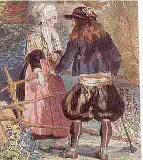

Son an Daol

Ton
|
1.-O Itron Varia Blevin! |
8. Tro va c'her-man, war an dachenn A zo ganin micherourien Oc'h ober taolioù, skabelloù Da rei d'am zud a-benn diryaou; 9. A-benn diryaou eo va eured; Re ziwezet emaoc'h digouet; Hag unan all e-deuz hadet Em liorz bleun ar garantez. PIARIG 10. Ganin-me hadet e oa bet Ha c'hwi ho-peuz en displantet Ha setu en breman sec'het Hogen va c'halon n'ema ket. 11. Ho karoud a ran koulskoude Ennoc'h e zonjan noz ha deiz; Ho alan dre doull an alc'hwezh A zeu d'am dihun em gwele. 12. Hanter-kant nozvezh emaon bet E toull ho tor, ne ouiec'h ket, Ar glao, an avel o me filad, Ken vere dour deuz va dilhad. 13. Tri re voutoù em-euz uzet, Va dous, oc'h ho tarempredi; Setu me gant ar pevare: c'hoazh n'ouzon ket va digarez. LOIZAIG 14. Mar gaout ho tigarez fell d'eoc'h, Selaouit mad, me hel laro d'eoc'h: Teir gwenodenn a gas d'ho ti: Kemerit unan heb distroi mui.- 15. Ha Piarig da zistroi endro Ker kabluz evel ar maro; -Bezo am-boa sonj da gaoud Ha padal kelvez am euz bet.- |
.
Versions originales tirées des carnets de collecte de La Villemarqué

|
Janedik An Titon P. 12 Son (3) Janedik An Titon a kan ge O vont gant he saout d'an park nevez. (5.1-2) Ar skalier pa oa pignet Da zigor ar gloued d'he loened, (a) Ken a gleve an archerien [pe "ar merserien"] Zo longet an noz 'maez ar c'hoad kistin. p. 13 (b) - Plac'hig yaouank, din lavarit, Pe c'hwi zo dimeet, pe n'oc'h ket? (7.2-3) Faot din bout fall da zen ebet: A-benn diryaou eo ma eured. (8) Barzh ar gerig war an duchenn A zo ganin micherourien Oc'h ober taolioù, skabelloù Da rey d'am zud a-benn diryaou. - (c) N'oa ket he gomz peurlaret, War lost un inkane oa taolet Hag er-maez ar vro a oa kaset. (d)- N'ho-peus ket gwelet 'hed an deiz Ar "vercherien" o tont amañ? (e)- M'am-eus o gwelet o vont an hent Hag ar plac'hig a ouele druz. Hag a grape ar blev he fenn Hag a strinke war an dachenn. p. 14 (f) - Tavit, plac'hik, na ouelit ket! A boued d'eoc'h-c'hwi na vanko ket, Soubenn ha kig div wech an deiz Ha laezh ribot e-c'hreiz an deiz. [Baron Jaouioz:] (30) Me ho gaso deus gambr da gambr Da gonto an aour, an arc'hant. (31)- Me garfe bout e ti ma zat Da gontañ skolped, me garfe mat. (g) Me garfe wel "merserien" krouget Ha me e ger gant ma fried. (h) Me garfe wel archerien er mor Ha me d'ar ger gant va enor. |
Itron Varia ar Plevin P. 26 (1) Itron Varia ar Plevin (Drevin), Dre an noz ha dre ar vintin, Deus ar mintin pa a zavan Siminal ma mestrez a welan. (2.1) Siminal eus ma mestrez koant (2.2) A ra din kalz kontantamant. Ha c'hoazh ne gredan ket e faot Pa ne ve dirag ma daoulagad. (A) Pa oan deuet da beg ar ros, Pe pa oan war bank ma gwele, Kane ar c'houg da c'houlou-deiz. (B) Konsolasion em spered Da c'hortoz o vont d'he gweled: He dorn, he divjod hag he zal A zo ken kaer hag ar c'hristal He daoulagad a zo 'n he fenn A zo ken kaer hag ar werenn. (6) - Ma mestrez koant paz 'in d'ho ti War ar gwir poent da zimeziñ, Roit-c'hwi din-me ur respont vat, Giz reas gwechall ho mamm d'ho tad. P. 27 (7.1) - Respont roin deoc'h, den yaouank, Ma ligne n'eo din ket kountant, Ma n'ho-pezo kent 'med tourmant. (C) - Me ne refen ket kalz a gas Pochet Doue em befe tourmant braz, Me garfe ur wech ken mervel Kaout ho karantez fidel. (12) Hanter-kant nozvez emaon bet Toullig ho dour, ne ouier ket, Ar glav, an avel 'n eus-me pilhet Ken zeue an dour eus ma dilhad. (11.3) Ho anal etre toul an alc'hwez Ya d'am gweled em gwele. (4.3) He divjod zo evel ar roz Me garfe he kaoud en noz. (13) Tri re boutou me 'm eus uzet, Ma dous, demeus ho taremprediñ. Komañset on gant ar pevare Ha c'hoazh n'ouzon ket ma zigarez. (14) - Mar goût digarez e fell d'oc'h N' vo ket pell me ya d'e reiñ d'oc'h: M'am'eus tri hentig penn ma zi. Kemer't unan! N' distroit mui! (D) Ma ligne n'ema ket kountant E dimezin er bloaz present. P. 28 (E) - Bremañ me rey vel ar glujar: Yeas da c'hav dindan an douar, Hi chomme eno da ouelañ Pa n'he-doa ket 'n hini gare. (F) Bremañ me ya d'en em beuzhiñ Pa n'am-eus ket 'n hini garen. - O den yaouank, distroit endro Ha neuse m'ho kemero. (G)-Distreiñ endro me n'hellan ket Rag ma c'halonig zo rannet. Dirag Doue paz em refuzit. |
Jeanne Le Titon (a) Quand elle entendit des h. d'armes [ou "des merciers"] Qui avaient passé la nuit dans la châtaigneraie. (b) - Jeune fille, dites-moi Si vous êtes mariée ou si vous ne l'êtes pas? (c) Elle n'avait pas terminé sa phrase, Qu'elle fut hissée sur la croupe d'un cheval Et emportée loin de son pays. (d)- N'avez-vous pas vu au cours de la journée Des h. d'armes [merciers] passer par ici? (e)- Je les ai vus prendre ce chemin Avec une fille qui pleurait à chaudes larmes. Et ils lui tiraient les cheveux Et ils la jetaient par terre. (f) - Taisez-vous, la fille, ne pleurez pas! La nourriture ne vous manquera pas, De la soupe au lard deux fois par jour Et du lait ribot à midi. (g) Je voudrais que les h. d'armes [merciers] soient pendus Et être chez moi avec mon époux. (h) Je voudrais qu'ils soient dans la mer Et moi, chez moi, avec mon honneur. Notre-Dame de Plévin (A) Quand j'étais en haut de la côte, Ou quand j'étais sur le banc de mon lit, Le coq saluait l'aube par son chant. (B) Consolation pour mon esprit Que d'attendre d'aller la voir: Sa main, ses joues et son front Sont aussi beaux que le cristal Ses yeux illuminent son visage Par leur beauté et leur transparence. (C) - Il me serait bien égal Même si je devais subir grand tourment, De mourir après vous avoir aimé Et avoir été aimé d'amour sincère. (D) Ma famille n'est pas contente Que je me marie cette année. (E) - Il ne me reste plus qu'à faire comme la perdrix: Qui est allée s'enterrer dans un trou, Elle est restée là à pleurer Pour n'avoir pas eu celui qu'elle aimait. (F) A présent je vais me noyer Puisque je n'ai pas eu celle que j'aimais. - Oh, jeune homme, revenez! Et alors, je vous prendrai. (G)- Revenir? Je ne le puis, Moi dont le coeur est brisé D'avoir été refusé devant Dieu. |
Joan Le Titon (a) Until she heard horsemen [or "haberdashers"] Who had spent the night in the chestnut grove. (b) - Young lady, tell me, Are you maried, or are you not? (c) She had not yet finished her speech, When she was thrown across a horse And carried away from these parts. (d)- Did you not see, during the day, Horsemen come this way? (e)- I did see them come this way With a girl who cried sourly. They tore her hairs And threw her on the ground. (f) - Be quiet, girl, don't cry! You shall not lack food, Soup with bacon twice a day And skimmed milk at midday. (g) I wish I'd see all horsemen hanged I wish I were with my husband. (h) I wish I'd see them drowned in the sea And I were back home and my honour preserved. Our Lady of Plevin (A) When I reached the top of the hill, Or was still sitting on the bench of my bed, I heard the rooster crowing at dawn. (B) Comfort to my mind it was When I was waiting to see her: Her hands, her cheeks, her brow, her eyes That are as clear as crystal And seem to illuminate her face With their diamond sparkling glow. (C) - I wouldn't care much, indeed, Even after suffering great torment, To die if I were assured Of your true love and devotion. (D) My relatives are not pleased That I should marry this year. (E) - I am to do like the partridge: That hides in a pit in the ground, And remains there whining in grief: It was not loved by whom it loved. (F) Now I am to drown myself Since my love was not requited. - O, young man, come back I've changed my mind: be my husband. (G)- Coming back is impossible: You smashed my heart to smithereens And you refused me before God. |